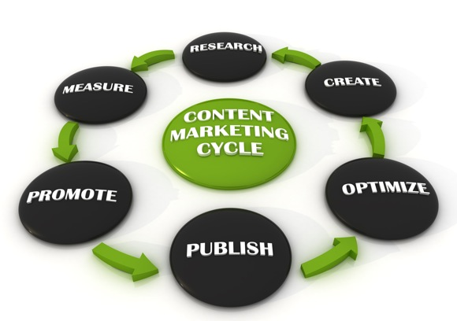
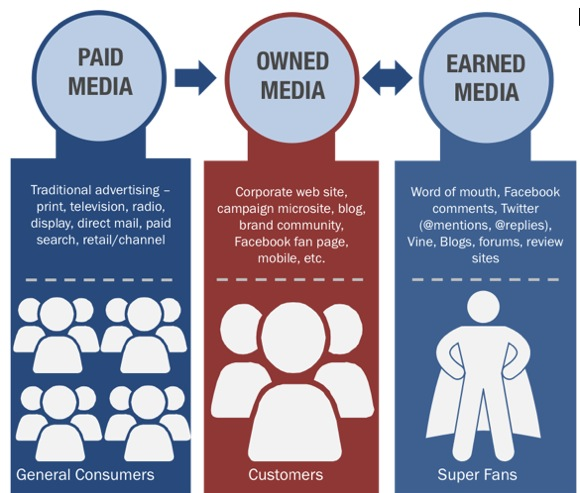

Content Marketing with
Paid, Owned, and Earned Media
Today's marketing landscape requires a level of sophisitication that can leave the most savvy business owner feeling lost and confused. Companies learning to embrace new experiences that converge paid, owned, and earned media are the brands that are winning. While each of these channels will play a critical role in your content strategy, the real power is when you can integrate two or more of the channels into one campaign or initiative. This is referred to as converged media. Companies that engage audiences across multiple screens, capitalizing on authentic content, reaching new fans, and boosting audience participation are the ones surviving and thriving.
In this online guide, we will explore what is paid, owned and earned media, and the benefits and challenges each one presents. We will also explain how you can leverage them with key considerations to keep in mind as you seek to form a content marketing strategy.

(Chart Source: Hootsuite)
 Mission Driven Media is a Denver, Colorado based marketing and media agency specializing in helping small businesses and nonprofits communicate a compelling message to win prospects, keep loyal customers, and gain outspoken advocates. Some of the services we provide:
Mission Driven Media is a Denver, Colorado based marketing and media agency specializing in helping small businesses and nonprofits communicate a compelling message to win prospects, keep loyal customers, and gain outspoken advocates. Some of the services we provide:
- Market and Competitive Analysis
- Loyalty and Referral Campaigns
- Search Engine Optimization (SEO)
- Social Media Strategy
- Online Reputation Management
For more information, go to our Contact Page.